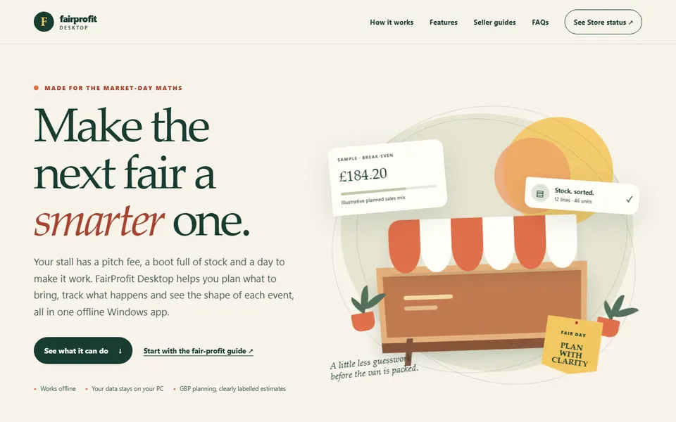

← Volver a todos los proyectos
App de Windows · Próximamente en la Store
Craft Fair Profit
Calcula si una feria artesanal merece la pena antes de reservar. Registra el stock, los gastos y las ventas de cada evento, y después revisa qué llevar y cuánto ganaste realmente ese día.
Para quién es: Para vendedores artesanales que planifican una feria y quieren saber si les compensará.
Qué hace
- Lleva juntos el recuento de stock, los costes y las ventas de cada evento
- Calcula el punto de equilibrio antes de comprometerte con un puesto
- Listas de comprobación de qué llevar y qué registrar
- Revisa cada evento después para ver qué funcionó
